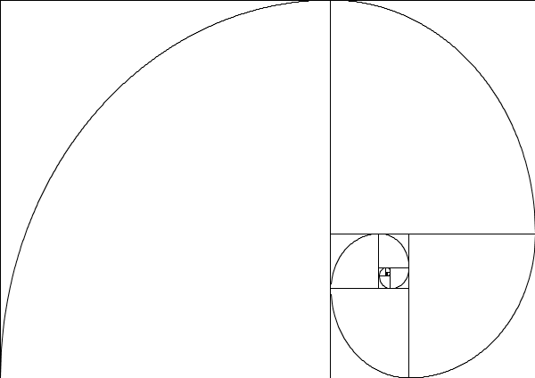

|  |
Printre infinitatea de șiruri existente în lumea matematicii, italianul Leonardo of Pisa, cunoscut și sub numele de Fibonacci, a descoperit un șir de numere extraordinar de interesant: „0, 1,1, 2, 3, 5, 8, 13, 21, 34, 55, 89, 144, 233, 377, 610, 987, 1597…”. |